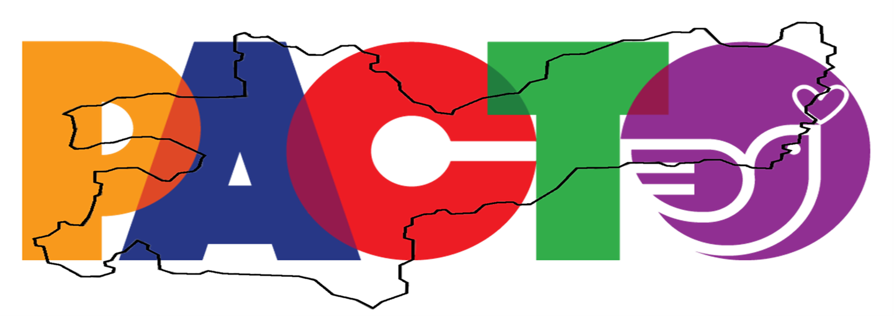
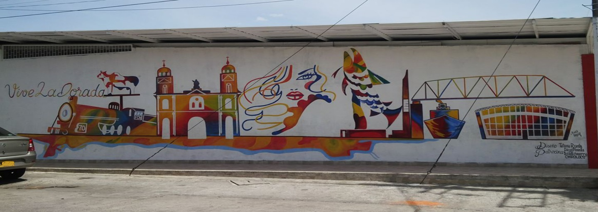
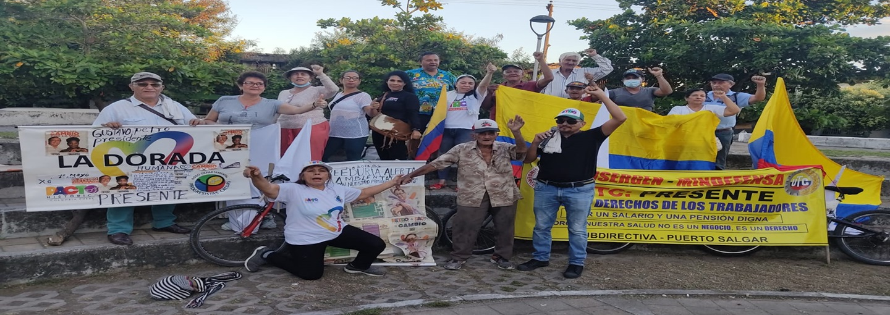

- 
- 

- 
Gustavo Francisco Petro Urrego es un político y economista colombiano, actual presidente de Colombia desde el 7 de agosto de 2022. Aquí te presento un resumen de su biografía:
Nacimiento y educación
Nació el 19 de abril de 1960 en Ciénaga de Oro, Córdoba, Colombia.
Estudió Economía en la Universidad Externado de Colombia y tiene una maestría en Economía en la Universidad de Salamanca, España.
Trayectoria política
Inició su carrera política en el movimiento guerrillero M-19, del cual fue miembro activo durante varios años.
Después de dejar las armas, se convirtió en asesor del gobierno de Bogotá y luego en concejal de la ciudad.
M-19 y desmovilización: En su juventud, Petro militó en el Movimiento 19 de abril (M-19), una guerrilla urbana activa entre 1974 y 1990. Tras la desmovilización del grupo en 1990, Petro se integró a la política legal y fue elegido miembro de la Cámara de Representantes en 1991.
Embajada en Bélgica: Entre 1994 y 1996, Petro se desempeñó como agregado diplomático para los Derechos Humanos en la embajada de Colombia en Bélgica.
En 2006, fue elegido senador de la República por el partido Polo Democrático Alternativo (PDA).
En 2010, se postuló como candidato a la presidencia de Colombia por el PDA, quedando en segundo lugar.
En 2011, fue elegido alcalde de Bogotá por el movimiento Progresistas, cargo que ocupó hasta 2014.
En 2018, se postuló nuevamente como candidato a la presidencia de Colombia por la coalición Colombia Humana, quedando en segundo lugar.
En 2022, ganó las elecciones presidenciales en segunda vuelta, convirtiéndose en el primer presidente de izquierda en la historia de Colombia.
Propuestas y políticas
Petro se ha destacado por sus propuestas progresistas y de izquierda, como la implementación de una economía basada en la sostenibilidad ambiental y social, la reforma laboral y la protección de los derechos humanos.
Durante su mandato como alcalde de Bogotá, implementó políticas de movilidad y transporte público, como el sistema de transporte TransMilenio.
Vida personal
Está casado con Verónica Alcocer y tiene seis hijos.
En resumen, Gustavo Petro es un político y economista colombiano con una trayectoria marcada por su compromiso con la justicia social y la sostenibilidad ambiental. Su elección como presidente de Colombia en 2022 marcó un hito en la historia política del país.
Gustavo Petro fue personero en 1981 y concejal de Zipaquirá en 1984 y 1986. Estas fueron las primeras posiciones políticas que ocupó.
Inicios de la Profesión PolíticaRepresentante a la Cámara (1991-1994 y 1998-2002). Fue elegido Representante a la Cámara en dos periodos. En este rol, se destacó por sus debates de control político y sus denuncias.
Sirvió como agregado diplomático para los Derechos Humanos en la embajada de Colombia en Bélgica, tras recibir amenazas por su activismo.Petro fue elegido senador por el Polo Democrático Alternativo (PDA), logrando la tercera votación más alta del país. Durante este período, destacó por destapar el escándalo de la parapolítica, revelando nexos entre políticos y grupos paramilitares, lo que resultó en la condena de más de 60 excongresistas.
Fue clave en la exposición de escándalos durante el gobierno de Álvaro Uribe, incluyendo los vínculos entre políticos y paramilitares y violaciones de derechos humanos por parte de las Fuerzas Militares.
En 2011, tras salir del PDA (Polo Democrático Alternativo) y fundar el Movimiento Progresistas, Petro fue elegido alcalde de Bogotá. Su programa, Bogotá Humana, se enfocó en reducir la pobreza, proteger el medio ambiente y combatir la corrupción estructural.
Logros destacados incluyen:
Reducción de la pobreza multidimensional para casi medio millón de personas (DANE).
Implementación del mínimo vital gratuito de agua potable para estratos 1 y 2.
Creación de la Secretaría de la Mujer y la Línea Púrpura para atender casos de violencia de género.
Disminución de la mortalidad infantil y la tasa de homicidios a mínimos históricos.
Creación de 417 jardines infantiles distritales y programas de salud preventiva en barrios pobres.
En 2010, Petro se postuló a la presidencia por el Polo Democrático, pero no logró suficiente apoyo.
En 2018, candidato por la Colombia Humana, quedó en segundo lugar frente a Iván Duque.
En 2022, liderando la coalición Pacto Histórico, ganó la presidencia con el 50,44% de los votos, convirtiéndose en el primer presidente de izquierda en la historia reciente de Colombia.
Ha impulsado reformas para cambiar y mejorar: salud, laboral, pensional, agraria y reapertura de la via férrea. Su gobierno ha sido crítico de los grandes intereses económicos y busca un enfoque de "economía popular" y transición energética.
Gustavo Petro ha sido una figura activa en la denuncia de casos de corrupción a lo largo de su carrera política. Sin embargo, también su propio gobierno a denunciado la corrupción y haciendo lo correcto como presidente.
Parapolítica.
Caso de la Yidispolítica.
Cartel de la contratación en Bogotá de los hermano moreno.
Corrupción en la DIAN, la salud y la Fiscalía.
"Marionetas II".
Corrupción en la UNP (Unidad Nacional de Protección) y otras entidades.
Despojo De Tierras.